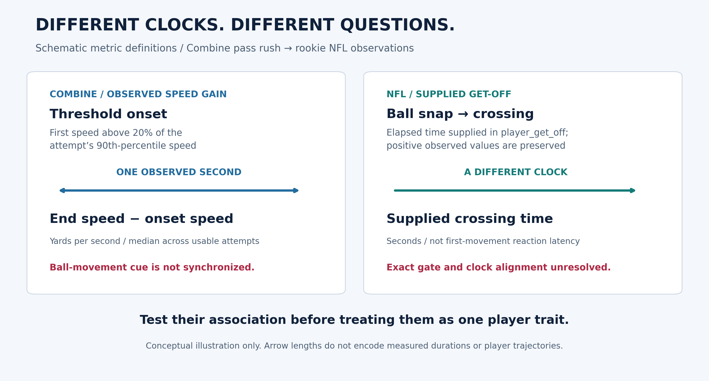

Rookie get-off prediction
Loading cohort results…
Equal-player mean absolute error of season-mean supplied get-off, in milliseconds. Fixed Ridge α = 10; recorded context is known at evaluation.
COMBINE → ROOKIE NFL PERFORMANCE
An explosive drill is a starting point.
What does it actually tell us about an NFL pass rush?
51 evaluated rookies. No established added sensor value. This one-second burst measure did not improve prediction reliably beyond traditional tests and recorded context.
A crossing-time gap can reflect measurement, deployment or execution. The gap alone cannot identify the cause.
ILLUSTRATIVE SCENARIO · NOT MEASURED OPPONENT TRACKING01 / TEST THE SENSOR CONTRIBUTION
Three nested models. The same players. Earlier cohorts train the reference; each evaluation year is shown. Lower error is better.
Loading cohort results…
Equal-player mean absolute error of season-mean supplied get-off, in milliseconds. Fixed Ridge α = 10; recorded context is known at evaluation.
02 / DEFINE THE CLOCK
Combine speed gain and supplied NFL crossing time are distinct observations. Neither is a direct reaction-time measurement.
End speed minus onset speed, in yd/s. Median over usable attempts. The speed threshold is not synchronized to the ball-movement cue.
10,285 pass-rush player rows · zero ball rowsSupplied positive player_get_off, in seconds. Its exact crossing gate remains unconfirmed; the source target is preserved.
Median absolute disagreement at the reconstructed spot versus one yard beyond it, on the same 334 clips. Better agreement at a diagnostic gate does not confirm the official definition.
03 / INSPECT THE COMPLETE EVIDENCE
All six figures from the paper, including both evaluation years and the two illustrative player profiles. Select a figure, or open its full-resolution image.

Figure 1. Schematic definitions: Combine speed gain and supplied NFL crossing time answer different questions.
Open full-resolution figure ↗04 / THE NFL REVIEW DECISION
The useful next action follows the evidence. No scouting-accuracy, review-time or coaching benefit has been demonstrated.
This burst measure has not established incremental value. Keep it descriptive rather than using it as a validated NFL get-off ranking.
Confirm the drill cue, crossing definition and starting position before interpreting a timing gap as deficient movement.
The frozen examples generate specific questions about starting depth and snap movement. Assignment and blocker contact remain unknown.
Small historical cohorts; exploratory evaluation; participation is a proxy. Missing get-off and eligibility filters limit the observed population. Context-only is the strongest point benchmark. Conditional player intervals, training/evaluation refits and shared-game sensitivities answer different uncertainty questions; no single interval covers every source. Full-film linkage, human agreement and practical benefit are unverified.
The interactive cohort panel uses only aggregate model errors from the maintained analysis. The six figures are the submission figures. Recorded trajectories and player/play exports are not distributed through this public companion.
THE COMPLETE SCIENTIFIC RECORD